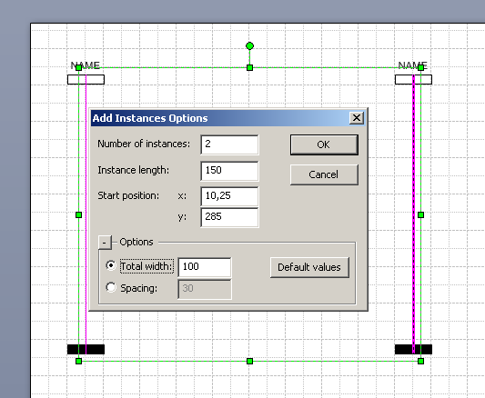
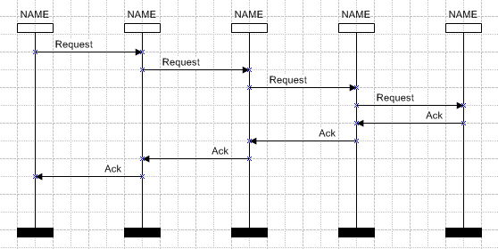

Automatic drawing
With all required shapes available in the BMSC and HMSC stencils, it is possible to draw virtually any MSC diagram. In practice, there are many stereotypes, however. SCStudio helps the user draw some frequently used patterns by several automatic drawing functions.
Add Instances
The first of them is the Add Instances function
accessible via menu Check → Drawing → Add Instances,
or Ctrl+Alt+F keyboard shortcut. It is available in
the context (right-click) menu of the document, too. The function draws a
given number of instances on the active page of the document, with
constant or dynamic space between each two of them.
When invoked, the following dialog appears:
The first two fields set the number of instances to be drawn and their length. Next two fields set the starting point from which to start drawing. If the cursor was in the document drawing area in the time of Add Instances invocation (that is, the keyboard shortcut or context-menu was used), the start position fields are filled with the cursor position, i.e. drawing will start from the point where the cursor was.
In the Options panel, if the Total width switch is chosen, all the instances will be drawn in the place of a width given, so the gaps between instances will be calculated to fit this area. On the contrary, the Spacing switch sets constant gaps between the instances not limiting the total width.
All numbers in the dialog are in units of the current page of the document.
Message Sequence
The Message Sequence function draws a sequence of messages among selected instances. The basic usage is that when one instance sends a message, which is received and resent by several other instances and finally received by the last instance, as illustrated in the following picture.

The Message Sequence function is accessible via menu Check →
Drawing → Message Sequence, or Ctrl+Alt+S
keyboard shortcut or Message Sequence context-menu
on instances. As for other automatic drawing functions, an options dialog
is opened after Message Sequence invocation:
The first option in the dialog determines the direction of the sequence. For each direction, a separate message label may be specified in the Left and Right Message Captions input boxes. Uni- and bidirectional message sequences are supported.
Starting Y-position determines the instances, among which the sequence is to be drawn. The initial set of instances is taken according to current selection:
- if there are no instances selected, all instances on the page are taken;
- if there is exactly one instance selected, then SCStudio waits for another instance to be selected;
- otherwise, all selected instances are taken into account.
The Starting Y-position has a default value of mouse position, so the most comfortable way of invoking Message Sequence is using the context-menu on the first instance at the point where the sequence should start, followed by selecting the last instance, to which the sequence shall come.
The next two input boxes, Vertical space between messages and Vertical space between left and right sequence define the vertical space between to subsequent messages on the same instance.
The last options group determines treatment of coregions found in the way of the message sequence. Such a situation may be forbidden (by the first choice in the dialog) or ignored (the second choice - the incident messages are simply attached to the coregion without any order), or the messages passing through a coregion may be ordered by ordering line or side-side ordering.